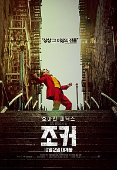
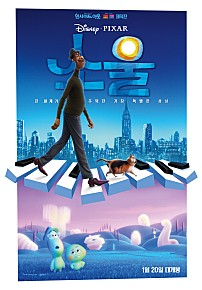
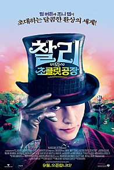

인생 영화 BEST5
| 제목 | 포스터 | 줄거리 | 바로가기 |
|---|---|---|---|
| 조커 |  |
고담시의 광대 아서 플렉은 코미디언을 꿈꾸는 남자. 하지만 모두가 미쳐가는 코미디 같은 세상에서 맨 정신으로는 그가 설 자리가 없음을 깨닫게 되는데… 이제껏 본 적 없는 진짜 ‘조커’를 만나라! |
바로가기 |
| 소울 |  |
나는 어떻게 ‘나’로 태어나게 되었을까? 지구에 오기 전 영혼들이 머무는 ‘태어나기 전 세상’이 있다면? |
바로가기 |
| 센과 치히로의 행방불명 |  |
이사 가던 날, 수상한 터널을 지나자 인간에게는 금지된 신들의 세계로 오게 된 치히로.. 신들의 음식을 먹은 치히로의 부모님은 돼지로 변해버린다. “걱정마, 내가 꼭 구해줄게…” 겁에 질린 치히로에게 다가온 정체불명의 소년 하쿠. 그의 따뜻한 말에 힘을 얻은 치히로는 인간 세계로 돌아가기 위해 사상 초유의 미션을 시작하는데… |
바로가기 |
| 찰리와 초콜릿 공장 |  |
세계 최고의 초콜릿 공장인 '윌리 웡카 초콜릿 공장' 어느 날, 윌리 웡카가 5개의 웡카 초콜릿에 감춰진 행운의 '황금티켓'을 찾은 어린이 다섯 명에게 자신의 공장을 공개하고 그 모든 제작과정의 비밀을 보여주겠다는 선언을 한다. 이제 전 세계 어린이들은 황금티켓을 찾기 위한 노력을 시작한다. |
바로가기 |
| 암살 |
대한민국 임시정부는 일본 측에 노출되지 않은 세 명을 암살작전에 지목한다. 암살단의 타깃은 조선주둔군 사령관 카와구치 마모루와 친일파 강인국. 한편, 누군가에게 거액의 의뢰를 받은 청부살인업자 하와이 피스톨이 암살단의 뒤를 쫓는데... 친일파 암살작전을 둘러싼 이들의 예측할 수 없는 운명이 펼쳐진다! |
바로가기 |